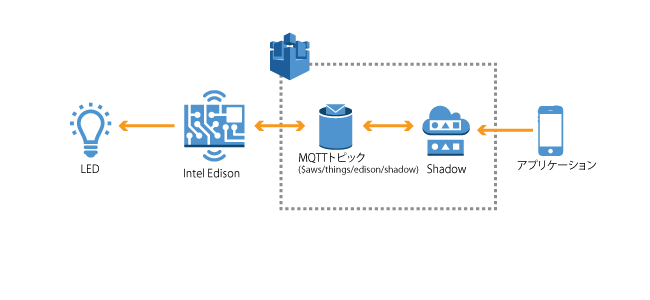
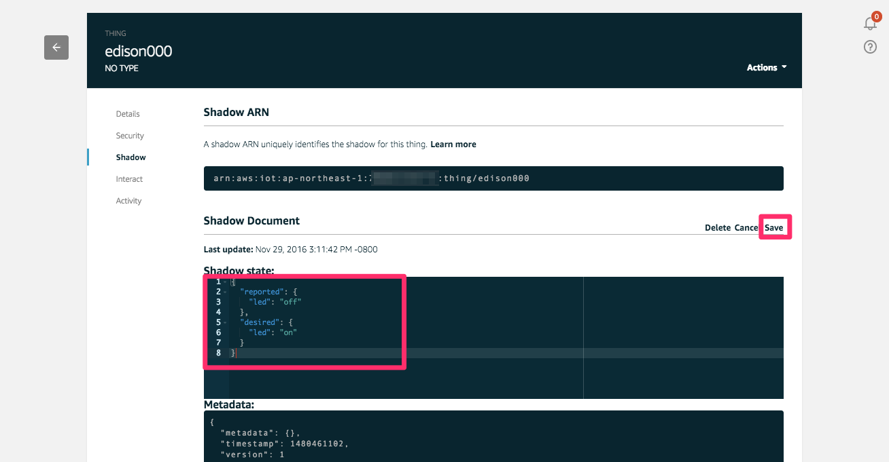

AWS CLIを実行し、Intel Edisonに接続されたLEDのON/OFFを行います。AWS IoTのShadowを利用してブラウザからEdisonのステータスの変更リクエストを送信し、Edisonは変更通知を元にLEDをOFF/ONします。また、完了後は最新のステータスをShadowにアップデートします。
Edison上で以下のプログラムを実行します。
root@edison:~# cd awsiot-handson-fundamentals/led
root@edison:~/awsiot-handson-fundamentals/led# node main.js
マネージメントコンソールのAWS IoTを開き、リソースの一覧から”edison”を選択します。
右の詳細画面から”Update Shadow”をクリックし、”State Detail”の画面に以下のJSONを入力してください。入力が終わったら”Update Shadow”をクリックします。クリック後、EdisonのLEDが点灯することを確認してください。
{
"reported": {
"led": "off"
},
"desired": {
"led": "on"
}
}
“desired”内にある”led”アイテムの値をoff/onのように記述を変更することでLEDの消灯/点灯を行なうことができます。
“Failed to pdate Shadow”のエラーが発生する場合は、リソース一覧の中の”edison”にチェックが入っているか確認してください。
